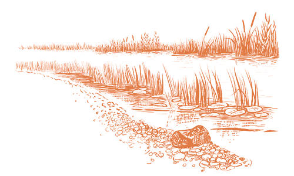

Swamp Sparrows provide sweet accompaniment to spring mornings in boreal bogs, sedge swamps, cattail marshes, and wet brushy meadows. Their clear, mellifluous trills resonate through wetlands from central Canada to the eastern United States, where Swamp Sparrows are fairly common but often hidden among aquatic plants. A vivid rusty cap and wings, combined with subtler browns, grays, buff, and black of the body, simultaneously blend with their marshy habitats and make them gloriously attractive in earth tones.
Like other sparrows, Swamp Sparrows feed on seeds, fruits, and invertebrates. They eat up to 85% plant matter in winter, whereas the same percentage is animal matter during spring and early summer. Known foods include ants, bees, wasps, beetles, aphids, caterpillars, grasshoppers, and crickets, as well as aquatic invertebrates such as molting damselflies and dragonflies. They also consume blueberries and the seeds of many sedges, grasses (foxtail, panic grass), swamp dock, smartweed, and vervain. Swamp Sparrows feed on seeds both on the ground and when perched in vegetation, and they readily walk onto muddy margins and wade into shallow water, even immersing the head, to capture invertebrates, which are sometimes discovered by flipping immersed vegetation. They also glean insects from shrubs during the warmer months.
Swamp Sparrows nest only in wetlands. In the northern parts of the range, they use fens and bogs that have patches of open water, especially those dotted with shrubs. They also nest in peat bogs with little open water. Through most of the breeding range, look for them in freshwater marshes with cattail, sedges, and other tall reeds, rushes, or grasses; these areas often have willows or alders around their edges. In the mid-Atlantic states, “Coastal Plain” Swamp Sparrows (the nigrescens subspecies) nest in brackish marshes in tidal rivers, mostly in the higher portion of the marshes where salt-meadow hay is dotted with small shrubs like marsh elder and groundsel. During migration, large numbers of Swamp Sparrows mix with Song, Lincoln’s, and White-throated Sparrows in the East, especially in coastal locations prone to “fallouts” of migrants. In such cases, the birds might be a considerable distance from the nearest wetland.
Females select a spot on or near the ground to build a nest near the boundary between forest and scrub. Females frequently place the nest at the base of goldenrods, berry shrubs, or clumps of grasses or sedges.
Females build an open cup nest of grasses, bark shreds, and dead leaves, which she lines with finer plant material. Nest building takes 2–4 days on average.